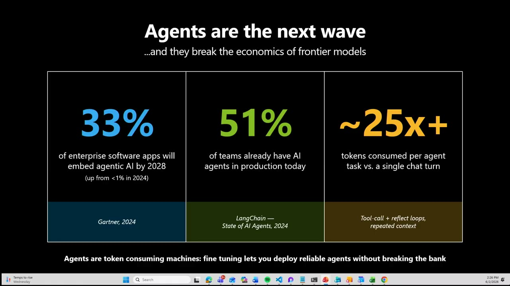
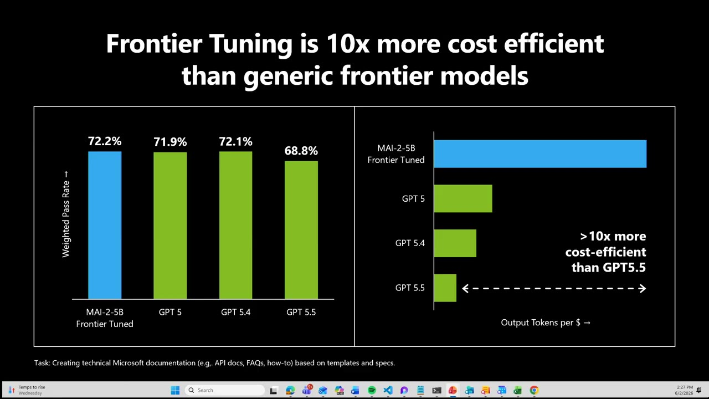
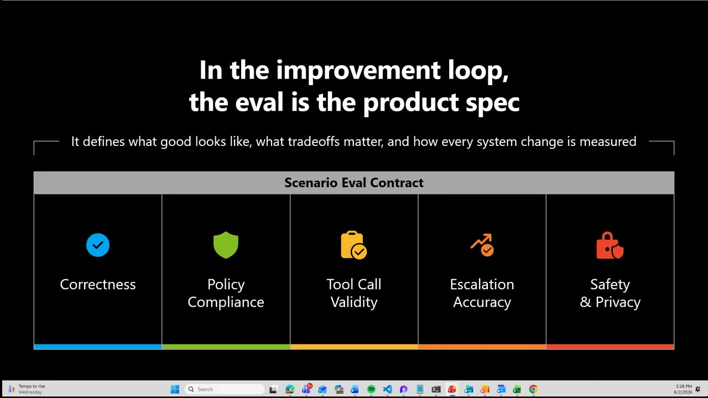
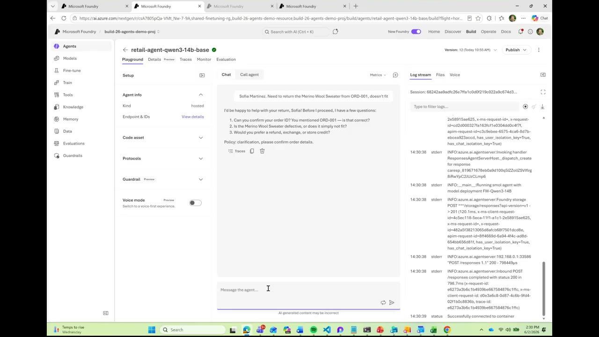
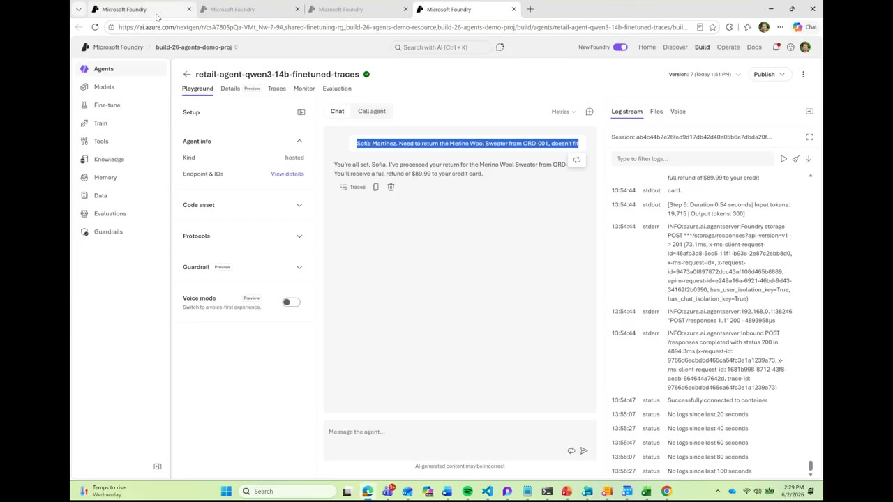
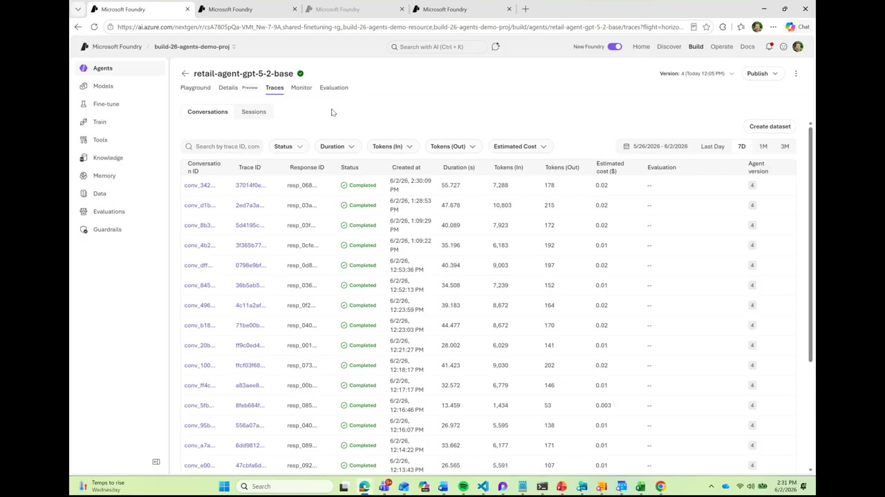
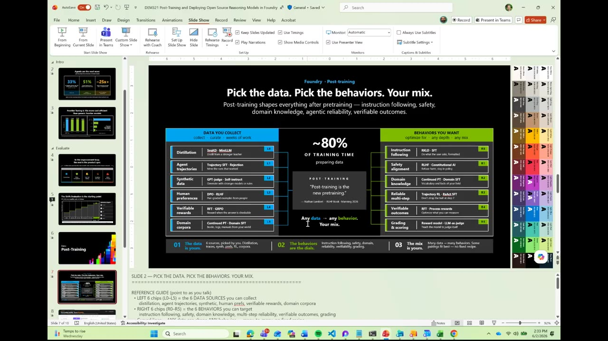
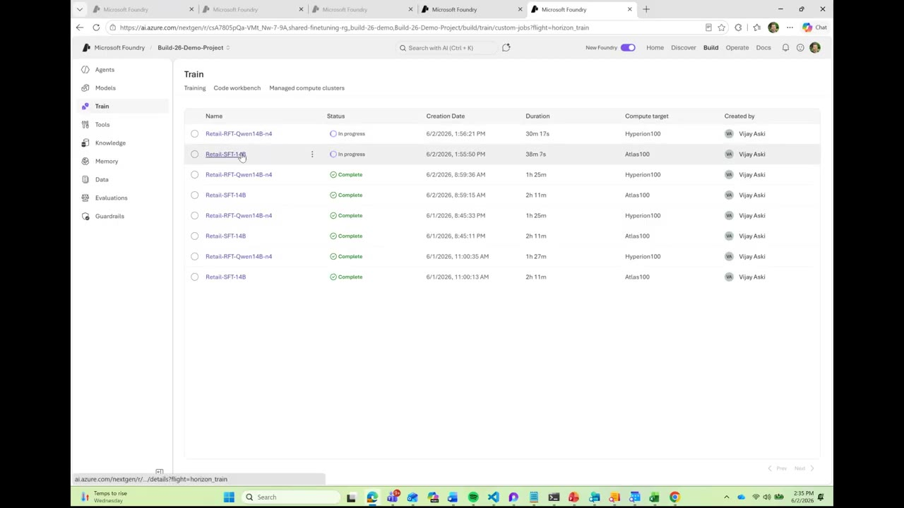
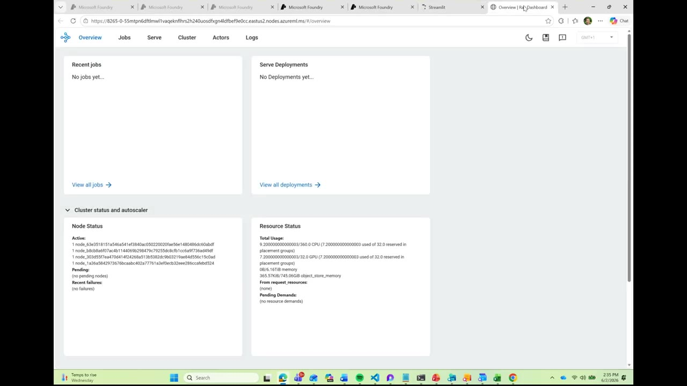
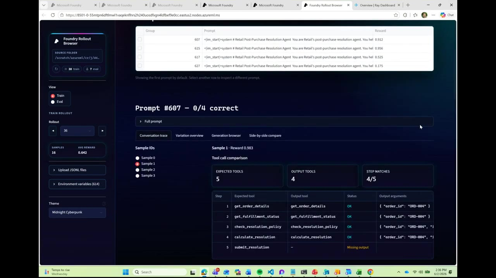

オープンソース推論モデルの後訓練（SFT/RFT）と Foundry デプロイ
「フロンティアモデル＋プロンプト」から一歩進み、強化学習で小型オープンモデルを自社ドメインに後訓練して 1/10 のコストで信頼できるエージェントを動かす ― Microsoft Foundry のデモを日本語要約。各画面キャプチャの内容調査と、SFT/RFT/DPO/GRPO/Ray などの周辺情報・関連リソースも収録。
3行サマリ
- エージェントは1タスクで単一チャットの約25倍のトークンを消費する「トークン消費マシン」。フロンティアモデルをそのまま使うとスケール時にコストが跳ねる。解は、小型オープンモデルを自社ドメインに後訓練して 1/10 のコストで同等品質を出すこと。
- 鍵はeval ファースト（エージェント時代の TDD）。「良い」の定義・ポリシー・ツール呼び出し順を先に eval として固め、モデルを差し替えながら本番出荷可否を判定する。Foundry は全セッションのトレースを自動記録し、それをRL 用データセットに変換してループを閉じる。
- 後訓練の主技法は SFT（模倣）と RFT（検証可能な報酬で経路最適化）。Foundry では Ray クラスタ・GRPO・カスタムコードを管理でき、ロールアウトブラウザでツール呼び出しごとの報酬（0〜1）を観察できる。※本デモは機材トラブルで一部がスライド説明に。
1. エージェントがフロンティアの経済性を壊す
登壇の Chris Lauren は、機材トラブル（ノート PC の接続）で遅れたことを詫びつつ本題へ。エージェントは私たちの代わりに「考え、行動する」ため、チャットとは桁違いのトークンを消費する。能力が高い一方、本番でスケールするほどコストが増大する。冒頭スライドがこの構図を数字で示す。

画像の読み解き：右端の「~25x+」がこのセッションの動機だ。エージェントはツールを呼び、その結果を受けて再び考え（reflect）、また呼ぶ、というループを繰り返すため、文脈が反復的に膨らみトークン消費が跳ね上がる。スライド下部の一文「Agents are token consuming machines: fine tuning lets you deploy reliable agents without breaking the bank（エージェントはトークン消費マシン。ファインチューニングは、財布を痛めずに信頼できるエージェントをデプロイする手段）」が主張の核心である。
2. なぜ後訓練か ― 小型モデルを 10x の効率で
誰もが最新フロンティアモデルを掴んでプロンプトエンジニアリングで目的を達成しようとする。それは有効だが、エージェントではツール呼び出しの順序・ポリシー遵守が重要で、ツールを呼ぶ頻度は全体のレイテンシも押し上げる。そこで、業務ドメインと「何が良いか」を学んだ小型オープンモデルを後訓練すれば、フロンティアのごく一部のコストで高い能力を発揮できる。

10x。" loading="lazy" />画像の読み解き：左の棒グラフ（縦軸＝Weighted Pass Rate）は「品質はほぼ横並び」を示し、右の横棒（横軸＝Output Tokens per $）は「同じ品質を桁違いに安く出せる」ことを示す。つまり「品質を落とさずコストだけ 10x 下げられる」のがフロンティア・チューニング（小型モデルの後訓練）の価値提案だ。MAI-2-5B は Microsoft の小型モデル系列で、特定タスク向けに後訓練された例として示されている。
3. eval ファースト ― エージェント時代の TDD
Chris は「発想の転換」を促す。安全・スケーラブル・信頼できる形でエージェントを育てるには、まず eval（評価）を定義する。これはエージェント時代のテスト駆動開発（TDD）に近い。「何が良いか」「ポリシーは何か」「どのツールをいつ呼ぶべきか」を eval として先に固めれば、どのモデルでも一貫・反復可能に測れる。フロンティアでも小型オープンでも、モデルを差し替えたときに出荷に足る品質かを判定するのが eval だ。
eval はプロセスの最後にやるものではない。最初に定義し、モデルとエージェントを反復するのと同時に eval も反復せよ。（Chris Lauren）

画像の読み解き：この5軸は、後段の RFT で「何を報酬にするか」に直結する。例えば Tool Call Validity は「正しいツールを正しい順序・引数で呼んだか」を、Policy Compliance は「返金ポリシー等の業務規則に従ったか」を測る。eval が仕様であり、同時に報酬設計のたたき台になる、という構造がこのデモ全体を貫く。あわせて Foundry は「あらゆるオープンソースフレームワーク・あらゆるオープンモデル」でエージェントをカスタマイズできるようになった、と発表された。
4. デモ ― base と fine-tuned の決定的な差
Chris は Foundry 上の顧客対応（リテール）エージェントで実演する。フロンティアの GPT-5.2 は業務を知らないが賢く、4つの専用ツールを与えれば「どう使うか」を推論してデータソースに接続する。一方、オープンモデルの Qwen3-14B は GPT-5.2 の 1/10 のコストで動く小型・高効率モデル。ツールの使い方も「そこそこ良い推測」をする。だが問題はユーザー体験にあった。

Running smol agent with model deployment FW-Qwen3-14B。04:45顧客としては「質問攻め」ではなく解決が欲しい。そこで、この小型オープンモデルを強化学習（RFT）で後訓練し、業務ドメインだけでなく「どのツールをどの順で使えば顧客・会社の便益を最大化し、コストを最小化できるか」を学ばせる。結果が次の画面だ。

| 観点 | base（未調整 Qwen3-14B） | fine-tuned（RFT 後） |
|---|---|---|
| 応答 | 3つの確認質問を返す（解決を先延ばし） | その場で返品を処理し全額返金 |
| ツールの使い方 | 「そこそこ良い推測」 | 正しい順序・引数で確実に実行 |
| 体験 | 質問攻めでフリクション | ワンショットで解決 |
| コスト | いずれも GPT-5.2 の約 1/10（小型オープンモデル） | |
FW-Qwen3-14B はこのモデルの Foundry 上デプロイ名。
5. 可観測性 ― トレースを RL データセットに変える
「では RL 用のデータセットはどう手に入れる?」 ― ここで Foundry が最近ローンチした可観測性（observability）が効く。あらゆるセッション・あらゆるユーザーとのやり取りが自動的に記録され、再現性（どう振る舞ったか）もコストも自動で捕捉される。個々のセッションのトレースを掘れば、モデルを何回呼び、どのツール（注文照会・ポリシー検証など）をどの順で呼んだかが見える。

retail-agent-gpt-5-2-base の Traces。会話ごとに Trace ID・所要時間・入出力トークン・推定コスト・エージェント版まで自動記録。右上の 「Create dataset」で、これらのトレースをそのまま後続の強化学習用データセットに変換できる。06:00画像の読み解き：この一覧は単なるログビューアではなく、「本番の実挙動を教師データに変える入口」だ。任意のモデル版で実行された全セッションを選択し、訓練データセットを生成 → RFT を回す。どのトレースが「理想の応答」かを選別して学習させれば、モデルはあなたのビジネスにとっての正解を学ぶ。これが「ループを閉じる（close the loop）」という発想である。
自動記録（コスト込み）"] B --> C["Create dataset
理想の応答を選別"] C --> D["SFT（模倣）"] D --> E["RFT（報酬で経路最適化）"] E --> F["Foundry Managed Compute に
デプロイ"] F --> A
6. 「後訓練（Post-training）」とは ― データ × 挙動 × レシピ
ここから Vijay Aski（VJ）がスライドで解説（デモは時間切れ）。後訓練（post-training）は、事前学習（pretraining）後のすべてを指す広い傘だ。使うデータは、自社の独自データ・エージェントのトレース・大きいモデルからの蒸留・合成生成など。データ準備には訓練時間の最大 80% を費やし、その後 SFT / RFT 等の技法でモデルの挙動を変える。

画像の読み解き（左＝集めるデータ6種）：このスライドは後訓練の「材料」と「狙う挙動」を一枚で俯瞰する優れた地図だ。左列は6つのデータ源と、それぞれに対応する代表技法を示す。
| データ源 | 代表技法 | 意味 |
|---|---|---|
| Distillation（蒸留） | SeqKD / MiniLM | より強いモデルから知識を蒸留 |
| Agent trajectories（エージェント軌跡） | Trajectory SFT / Rejection | うまくいった実行だけを採掘 |
| Synthetic data（合成データ） | GPT-judge / Self-instruct | 強いモデルで生成 |
| Human preferences（人間の選好） | DPO / RLHF | 人によるペア評価の例 |
| Verifiable rewards（検証可能な報酬） | RFT / GRPO | 答えが検証できるときに報酬 |
| Domain corpora（ドメイン文書） | Continued PT / Domain SFT | 自社の書籍・ログ・マニュアル |
（右＝狙う挙動6種）：右列は「ダイヤル」として調整したい挙動と対応技法。Instruction following（指示追従）・Safety alignment（安全整合／RLHF・Constitutional AI）・Domain knowledge（ドメイン知識）・Reliable multi-step（多段の信頼性／Trajectory RL・ReAct SFT）・Verifiable outcomes（検証可能な結果／RFT・Process rewards）・Grading & scoring（採点／Reward model・LLM-as-judge）。§3 の Scenario Eval Contract がここでの「挙動＝報酬」の設計に対応する。
7. SFT と RFT の違い
VJ は2技法を端的に定義する。パイプラインは「トレースで蒸留 → SFT → RFT」。目的はトークン効率・性能・ツール呼び出しの正確性を上げ、エージェントを実効的にして投資対効果（ROI）を得ることだ。
| 技法 | ひとことで | 仕組み | 向くケース |
|---|---|---|---|
| SFT（教師ありFT） | 模倣させる | 入力→出力のペアで、与えた通りの応答を再現するよう学習 | ほとんどの用途の出発点（ドメイン特化・様式・指示追従） |
| RFT（強化FT） | 報酬で最適化 | 「検証可能な手順」を定義。全ステップを踏んでタスク達成できたら報酬（0〜1、1に近いほど良い） | 正解が検証可能な領域（数学・化学や、ツール手順が明確な業務） |
| DPO（参考） | 選好を学ぶ | 「好ましい/好ましくない」の比較から学習（別の報酬モデル不要） | 安全性・スタイル・有用性など主観的品質の整合 |
SFT は「与えたものをどう真似るか」を教える。RFT は「検証可能なステップを全部踏んでタスクを終えたら、それを報酬する」。より検証可能（verifiable）だ。（Vijay Aski）
8. 学習の実行 ― Ray クラスタと RFT ロールアウト
VJ は事前に投入しておいた学習ジョブを見せる。SFT ジョブと RFT ジョブが並ぶ。

Retail-RFT-Qwen14B-n4（compute target: Hyperion100）と Retail-SFT-14B（Atlas100）の SFT/RFT ジョブが進行中・完了で並ぶ。RFT は約1時間25分、SFT は約2時間11分など、所要時間も一覧される。09:10ジョブを投入すると、Ray のダッシュボードやロールアウトブラウザとネイティブ連携する。Ray クラスタを使えば、Foundry 内でカスタムコードを持ち込み、GRPO を実行し、自前のモデルを持ち込んで、クラスタ全体を管理できる。

画像の読み解き：Ray は分散処理のオーケストレータで、RFT の「多数のロールアウト（試行）を並列に回す」用途に向く。画面の Node Status（Active な複数ノード）と Resource Status（総 CPU/GPU に対する使用量）から、クラスタが複数 GPU ノードで並列に学習を回していることが読み取れる。そして RFT の中身＝ロールアウトを Foundry Rollout Browser で観察する。

get_order_details → get_fulfillment_status → check_resolution_policy → calculate_resolution → submit_resolution の各ステップを検証する。10:35画像の読み解き：これが RFT の心臓部だ。モデルが各サンプルで踏んだツール呼び出し列を、期待される正しい列（Expected tool）と突き合わせ、一致度（Step matches）と正しさに応じて報酬（0〜1）を与える。図では 5 番目の submit_resolution が「Missing output」で欠けており、これが減点要因となって Prompt #607 が「0/4 correct」になっている様子が読み取れる。「この手順なら OK、この手順なら罰則（punitive）」とツール呼び出しごとに報酬を設計し、報酬が上がるまで強化学習が進む ― これを実際に眺められるのがロールアウトブラウザである。
ツール列を生成"] B --> C["期待ツール列と比較
Step matches"] C --> D["報酬を算出 0〜1
（正解手順=高, 逸脱=低）"] D --> E["方策を更新（GRPO）"] E --> B
9. まとめ・周辺情報・リソース
デモは機材トラブルで駆け足となり、最後の「SFT＋RFT でより良い結果になる」パートはフルには見せられなかったが、示された流れは一貫している ― eval を先に定義し、本番トレースを自動記録してデータセット化し、SFT → RFT（Ray/GRPO）で小型オープンモデルを後訓練し、Foundry Managed Compute にデプロイしてループを閉じる。狙いは、フロンティア級の品質を 1/10 のコストで、信頼できる形でスケールさせることだ。
この動画の位置づけ（周辺情報）
- 本セッション DEM321 は 11 分のショートデモ。より踏み込んだ完全版が BRK232「Post-Training and Deploying Open Source Reasoning Models in Foundry」で、SFT/RFT・Ray・ローレベル API（コード名 loom）・GRPO・デプロイまでを解説している（発表者の画面にも BRK230/BRK231/BRK232 の資料が見えていた）。本スタッシュの日本語要約: Foundry でオープンソース推論モデルをポストトレーニング＆デプロイ（BRK232）。
- 可観測性・評価（eval）側の詳細は DEM361（Open Inference / Phoenix / LLM-as-a-judge）、蒸留による小型化は DEM322（モデル蒸留 × ファインチューニング） が関連する。
関連リソース
- Microsoft Learn ― Fine-tuning overview（SFT/DPO/RFT・Serverless vs Managed Compute）
- Build 2026 次の一歩: aka.ms/build26-next-steps ／ Foundry Discord: aka.ms/build/foundrydiscord
- デモ中に登壇者が開いていた導線:
aka.ms/customevals・aka.ms/customjobs・aka.ms/custom-training-agents（カスタム評価／カスタムジョブ／カスタム訓練エージェント） - 用語: Ray（分散実行基盤） ／ GRPO（DeepSeekMath 由来の RL 手法）／ Qwen（オープンウェイトモデル）